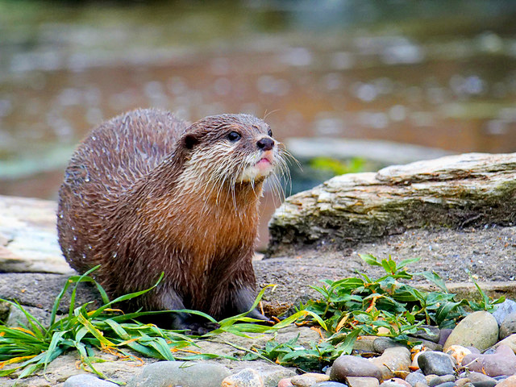
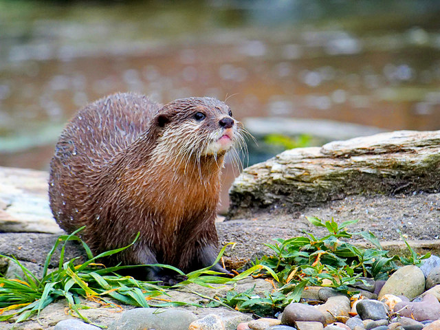
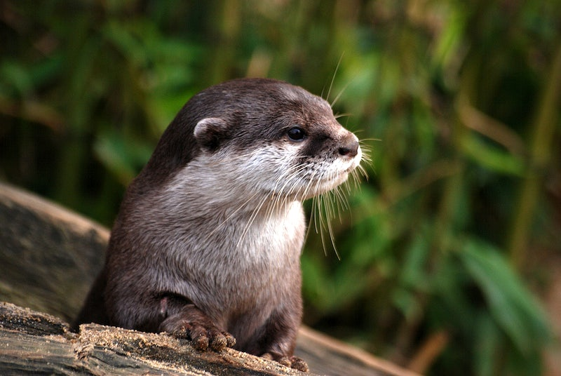
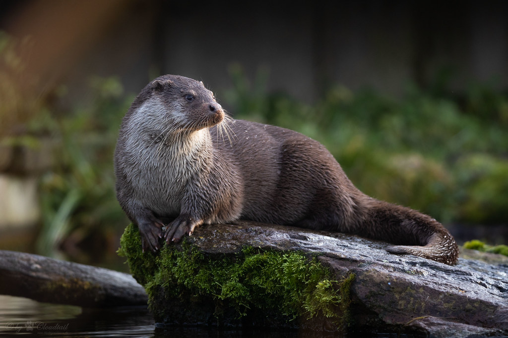
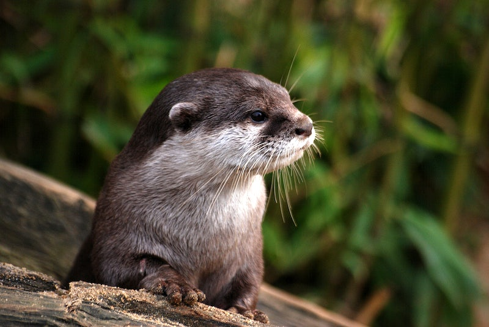
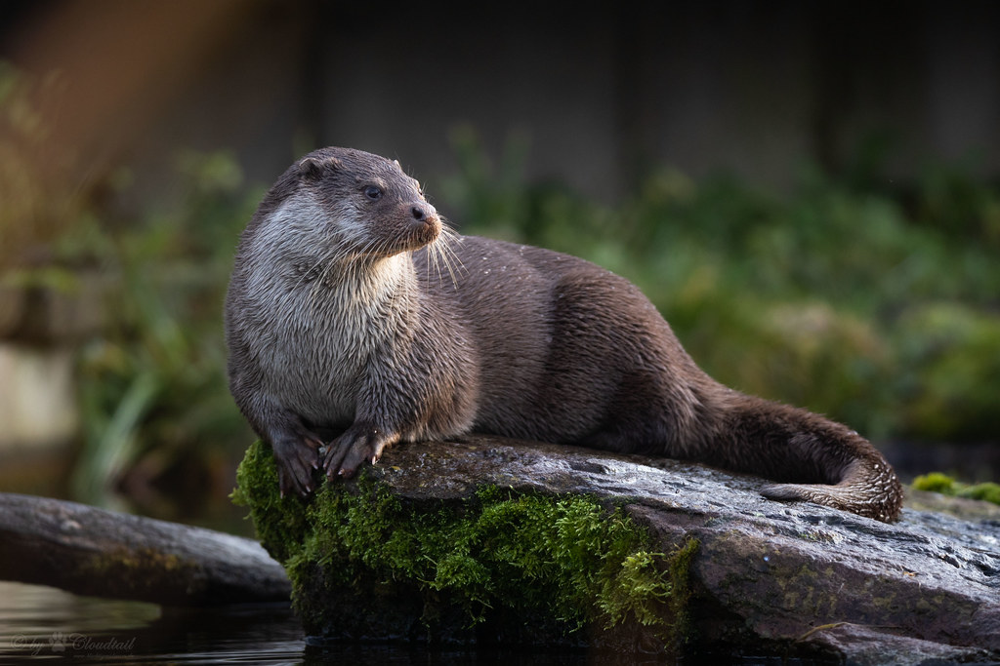
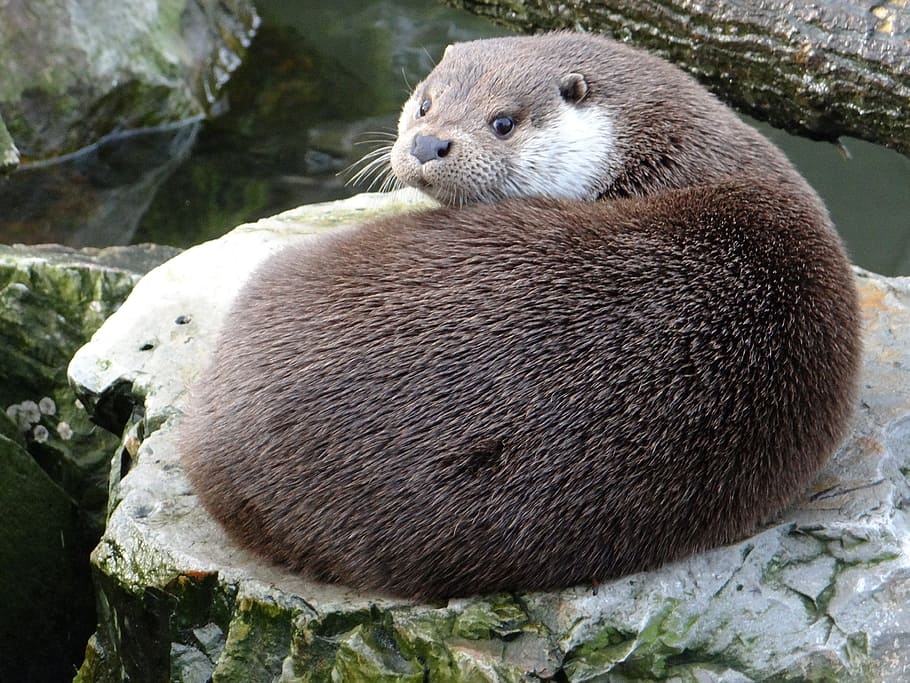
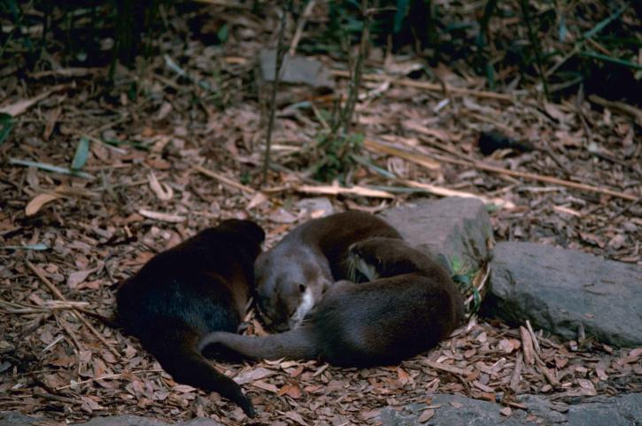
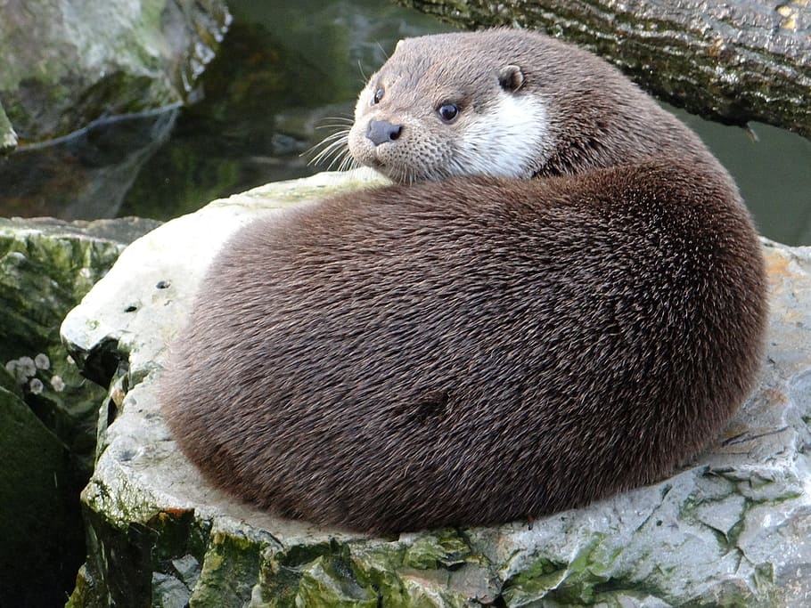
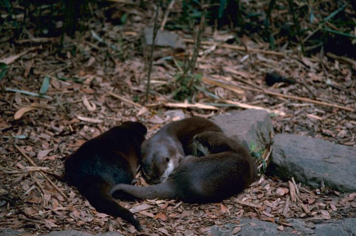

Who are we ??
Founded in 2015, Otter Guard is all about making a real difference in the lives of otters. We're a group of dedicated individuals who share a deep love for these charming creatures and a commitment to their well-being.
What we do
At Otter Guard, our mission is clear: to protect otters from harm, ensure their natural habitats thrive, and educate the public about the importance of otters in our ecosystems.
Our Work in Action
- Rescue and Rehabilitation: We rescue otters from unethical breeders and provide them with a safe haven where they can recover and thrive.
- Anti-Poaching Efforts: We actively combat poaching activities that threaten otter populations, working closely with law enforcement to ensure the otters' safety.
- Habitat Restoration: Our team works on rehabilitating and preserving otter habitats, creating safe spaces for these animals to flourish.
- Education and Outreach: We believe that awareness is key. We organize workshops, awareness campaigns, and school programs to inform people about otters and their significance in our ecosystem.
Join Us in Our Mission
We invite you to be a part of our journey in safeguarding otters and their natural homes. Together, we can ensure that otters continue to play their vital role in our environment for generations to come. Thank you for your support and for standing with us to protect these wonderful creatures.

Gallery
Some of our saved otters...


 

 





 


